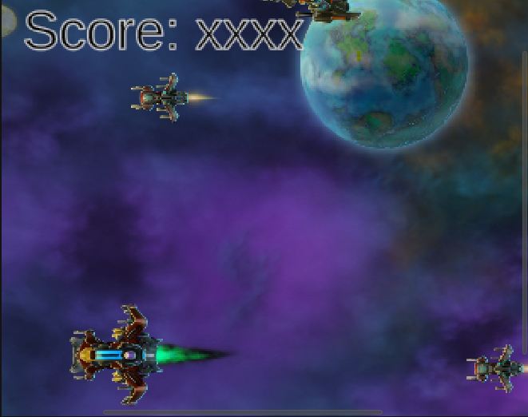
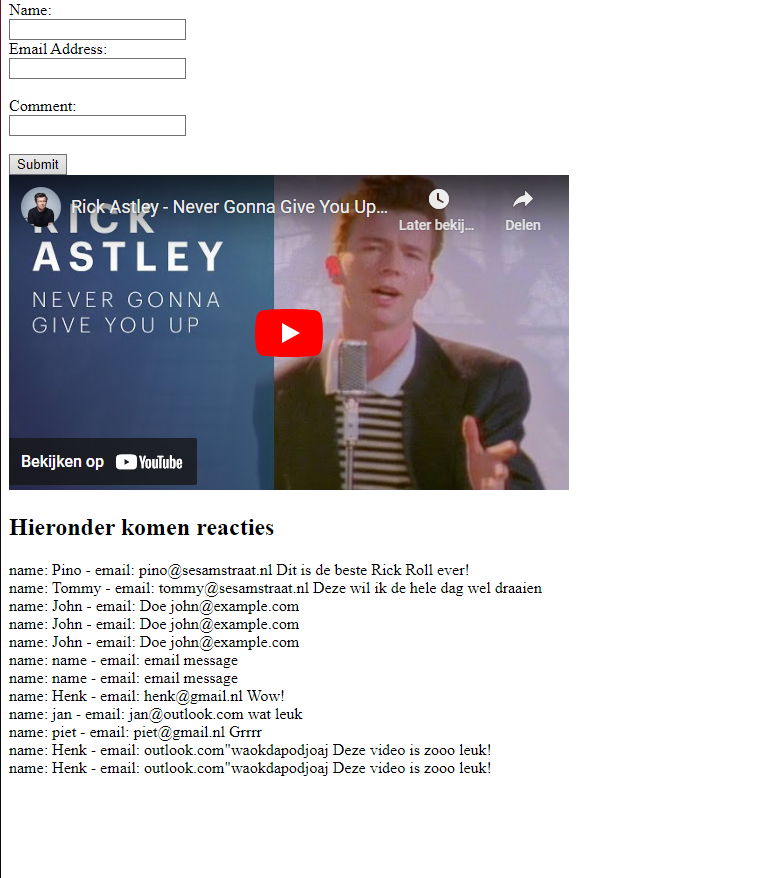

# ace4spades.github.io
Welcome to David Bosch's portfolio.
Projects I have made:
1. Space Clicker

Space Clicker was a task assigned for students to become more familiar with the Unity workspace. The purpose of this game is to destroy the approaching spaceships by clicking on them. Doing so will award you with points depending on the speed and size of the ship you destroyed. The aim is to get the highest score possible.
2. Youtube comment section

The youtube clone was a task assigned for students to become more familiar with using HTML, CSS and PHP to create a functional youtube comment section. The comments were made functional due to the mySQL database. Information was sent via a form to the database, such as the name, email address and the comment itself. The information was then pulled from this database and displayed under the video.
3. Asteroids 3D
image
Asteroids 3D was a task assigned to have students understand the basics of how to use the Unity engine, and to prepare for the next "team based" project. The game's purpose is to obtain as much scrap as possible without getting hit by asteroids, which upon getting hit
3 times will end the game. You have a short range gun on your ship you can use to safely destroy the asteroids from a distance.